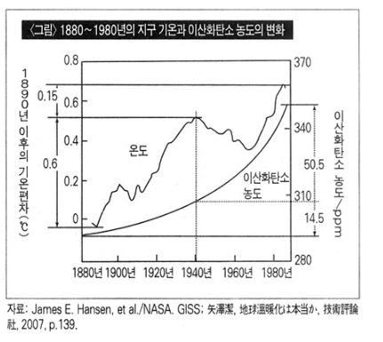

Over 10 years, more and more cases and victims do appear around the world because of cold wave.
Global means related to the whole world. Since the early 2000s, we have been able to see the news that there has been a constant number of incidents around the world due to the cold and cold waves. For example, an SBS article from S. Korea in 2013, more than 90 people were killed in Moscow, due to the weather got down to minus 25 degrees Celsius and minus 50 degrees Celsius in Siberia. Dozens of people, including homeless people, had been killed in Ukraine and Poland because of sudden cold waves. In Japan, four hikers were isolated in a blizzard in Nagano Prefecture, and in China, the waters off The Mountain Peninsula and The Liaoning Peninsula froze, causing air lifts to emerge. In India, a hundred people have been killed in a "strange cold wave", with temperatures below 10 degrees Celsius lower than usual, and the cold wave continues to cause a four-fold surge in sudden death surges in Taiwan. These examples show that the whole world continues to suffer a cold wave and the resulting casualties are also occurring. Therefore, it is a global problem.
Cooling theory is also an environmental problem. As mentioned above, the cold wave that continues to bring more and more cold temperatures is causing casualties and can also cause significant damage to the agricultural industry. For example, south Korea has a minimum of 20% to 80% damage in each agricultural area, with low temperatures and frost falling to minus 4 degrees Celsius in April 2020. In addition, there was and is a significant impact on the fishery, especially in the South Jeon-Nam and Gwangju regions in the early 2000 and amount of damages was estimated to be 20 billion Korean won (200,000,000 in US dollars).
November 1988, the United Nations Environmental Programme and the World Meteorological Organization jointly formed an "intergovernmental consultation on climate change" and released a first report that the average global temperature would rise by 3.2 degrees over the next 100 years due to increased greenhouse gases. In Kyoto, Japan, in December 1997, developed countries signed a Kyoto agreement to reduce greenhouse gas emissions by an average of 5.2% between 2008 and 2012, 2013 and 2020, and finally came into force in 2005. To reduce the 5.2 percent, developed countries are aiming to invest about $10 billion US dollars by 2020. Then here is one we have to ask. With $10 billion invested and reducing greenhouse emissions by 5.2 percent, how much does the temperature drop? It is only 0.07 degrees. Considering the increase in the use of fossil fuels in developing countries, who are not mandatory countries such as China and India, the Kyoto Protocol is unlikely to have a meaningful impact on global warming. https://www.snopes.com/fact-check/30000-scientists-reject-climate-change/
There is a reasonable background behind the United States' withdrawal from the Kyoto Protocol. 30,000 U.S. scientists and intellectuals signed a "warming petition" calling for the Kyoto Protocol to be ratified. The petition, led by Saitz, a physicist who was former president of the American Academy of Sciences and president of Rockefeller University, is as follows: "We urge the United States government to reject the global warming agreement that was written in Kyoto, Japan in December, 1997, and any other similar proposals. The proposed limits on greenhouse gases would harm the environment, hinder the advance of science and technology, and damage the health and welfare of mankind. There is no convincing scientific evidence that human release of carbon dioxide, methane, or other greenhouse gases is causing or will, in the foreseeable future, cause catastrophic heating of the Earth’s atmosphere and disruption of the Earth’s climate. Moreover, there is substantial scientific evidence that increases in atmospheric carbon dioxide produce many beneficial effects upon the natural plant and animal environments of the Earth. The Kyoto Protocol will have a very negative impact on technological developments around the world, especially technological developments that will provide opportunities for more than 4 billion people in developing countries to escape poverty."
I The first mention of the concept of greenhouse effects was in 1827 by the French scientist Fourier. In a paper published in 1896, Swedish chemist Arenius rated rising temperatures as a positive benefit, not a crisis of humanity. In 1988, Hanson of NASA Goddard Space Research Institute (GISS) released data indicating the relationship between global temperature changes and carbon dioxide concentrations in the atmosphere. They argued that in the 1880s and 100 years, the concentration of carbon dioxide in the atmosphere increased from 290 ppm to 355 ppm by 65 ppm, resulting in a 0.75 degree increase in temperature. In a paper published in the scientific journal Science, global warming is almost unprecedented in the next century (21st century), with the melting of antarctic ice and rising sea levels, many cities in the world being deserted and deserted inland. Can we really determine the causal relationship between global temperature changes and carbon dioxide concentrations? According to the figure, 80% (0.6 degrees) of 0.75 degrees (0.6 degrees) has risen over 100 years, but carbon dioxide concentrations have increased only 22% (14.5 ppm) in the meantime. Since 1940, temperatures have risen only 20% (0.15 degrees) of 0.75 degrees, but carbon dioxide concentrations have increased by 78% (50.5 ppm). Is it persuasive that GISS generalized the results based on this data without putting these variables in it?

Looking back at the picture above, atmospheric temperatures continued to rise until 1940. Greenland at the time was hotter than it is for now. From the temperature observation, South Korea's maximum temperature was 40 degrees in 1942. From 1940 to 1975, the earth cooled down. The lowest temperature in S. Korea was minus 32.6 degrees Celsius in Yangpyeong on January 5, 1981. Scientists who have called for global warming have quickly abandoned the theory of global warming and insisted on the global cold. They created a scenario in which a new ice sheet would destroy humanity. In the late 1970s, when temperatures rose again, they transformed again. As in the 21st century, the hypothesis of artificial global warming is dominating the world like populism. However, is it appropriate to brand carbon dioxide, a product of respiratory action, as a basic raw material for the photosynthesis of organisms?
Fossil fuels are literally fossils of plants that existed on earth in the past. When fossil fuels are burned, carbon dioxide from the atmosphere of the past is released from the storage state to the atmosphere. With no predictors of tomorrow's weather and even the number of water ingress areas, shouldn't it be wise to learn how to adapt to natural climate change rather than a reckless attempt to control the complexity of the earth's climate? As it seen from the ability to natural restoration of the landfill site in Seoul, the earth's ecosystem is not vulnerable at all. The IPCC estimates that by 2030, it will cost 3% of the world's GDP to curb temperature rise to within 2.4 degrees. Even with a rise of 2.4 degrees, the earth's atmosphere is lower than the temperature of the medieval warming.
JM's ORG will keep on telling truth. By connecting with scientists and experts, we will question on things with the objective data and Valid arguments.
Thank you.